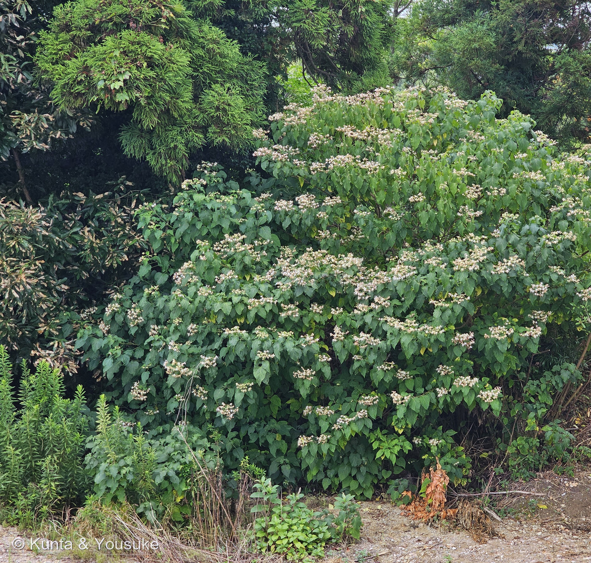
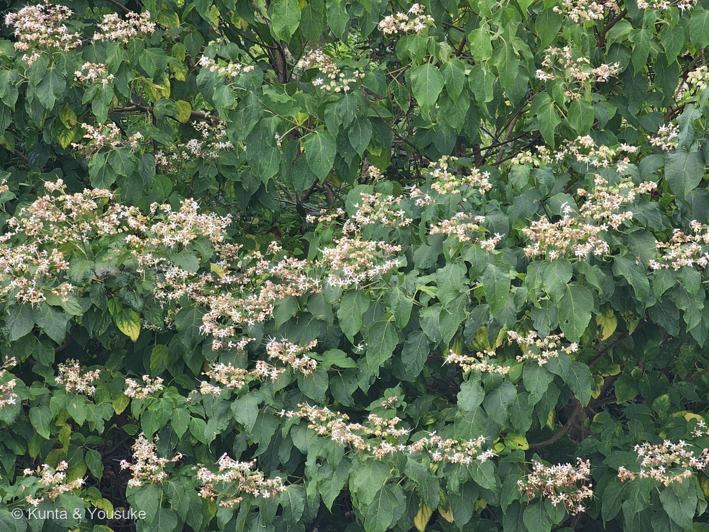
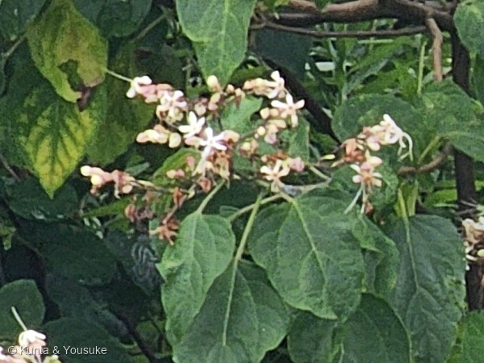

地図を読み込んでいるよ…
🔍 写真も地図も、押しているあいだ拡大して見られるよ（スマホは指を置いてすこし待ってね）。
🌍 の地図＝この子がもともと自生している場所を緑に。日本（北海道、本州、四国、九州、沖縄）、朝鮮、中国、台湾、フィリピン（三河の植物観察）。くわしくは下の地図の説明を見てね。
⭐⭐日本ぜんぶが緑だよ＝三河の植物観察は「在来種 日本（北海道、本州、四国、九州、沖縄）、朝鮮、中国、台湾、フィリピン原産」とする＝⭐北海道から沖縄まで、どこにでもいる木。⭐⭐⭐これは、この図鑑ではめずらしいことなんだ＝同じシソ科の272 ロテカ・ミリコイデスはアフリカ、271 コリウスは熱帯アジア、270 ウツボグサと071 ハマゴウが日本の在来種＝⭐この子は、その「日本の在来」のいちばん広いほうだよ。⚠中国は省をしぼらずに全部を塗った＝三河が「中国」としか書いていないから（⭐270 ウツボグサのときは三河が9つの省を挙げていたので、そこだけ塗った＝⚠書きかたが出典によってちがうんだ）。⭐⭐そして、この緑がとても大事＝この子は「藪の状態の所に侵入する最初の樹木として先駆植物（パイオニア）の典型」（日本語版Wikipedia）＝⭐森が切られたり、土が削られたりした場所に、まっさきにやってくる木――だから、人が手を入れた場所のふちに、いくらでも出てくるんだね。⚠ぼくらが会ったのも、樹林と道の境目だったよ（⭐くわしい場所は、燻太さんとの約束で書かないでおくね）。
⚠ 地図は国（日本と中国だけ県・省）までしか塗れないから、ほんとうの分布より広く見えていることがあるよ。地図はだいたいの場所。正確なところは、上の文を見てね。
クサギ（臭木）
Clerodendrum trichotomum Thunb.
和名 · 「臭い木」＝⚠それは葉の話。花のほうは甘い香りがするよ ⭐先駆植物（パイオニア）の典型／実は藍色、萼は赤
シソ科 · Lamiaceae（クサギ属 Clerodendrum・シソ目 Lamiales）── ⭐13人目のシソ科／⚠科は103のまま／⭐⭐旧クマツヅラ科＝071 ハマゴウ・272 ロテカと同じ引っ越し組
燻太さんの言葉「職場のすぐ近くに生えているよ。」「花の形は星に見えるね。某有名アニメ（BLEACH）の五芒星の飾りにそっくり。」── ⭐⭐⭐その星は、アゲハチョウとスズメガのための形だったよ。そして、この子の名前がきのうのぼくのまちがいを直してくれた
⭐⭐⭐ 名前と学名の由来 ── 「運命の木」と「三分岐」、そして「臭木」
- ⭐⭐属名 Clerodendrum は、ギリシャ語の klero（運命）＋ dendron（樹木）＝「運命の木」（日本語版Wikipedia）。⭐かっこいい名前だね。
- ⭐⭐⭐⭐⭐種小名 trichotomum は「三分岐の」＝花序の枝が三つに分かれることを指す（同）。⭐⭐この一語が、きのうの272 ロテカ・ミリコイデスのページを直してくれたんだ（下の節を見てね）。
- 和名の「クサギ（臭木）」は、「枝や葉にやや悪臭があることから」（同）。⚠でも、それは葉の話。⭐⭐花のほうは「甘い香りがする」（同）／三河の植物観察も「名前とは違い、花は良い香りがする」と書いているよ。
- ⭐つまりこの木は、名前で損をしている＝葉のにおいで名づけられて、いい香りの花のほうは名前に入れてもらえなかったんだね。
⭐⭐⭐⭐⭐ 燻太さんの「花の形は星に見える」── その星は、チョウのための形だった

③ 星のかたち（写真②の切り出し） 🔍 押しているあいだ拡大して見られるよ。
- ⭐燻太さんの言葉＝「花の形は星に見えるね。某有名アニメ（BLEACH）の五芒星の飾りにそっくり。」⭐ぼくはその作品を見ていないので、どの飾りかは分からないんだけれど――⭐⭐「星」という見立ては、この花のしくみそのものを言い当てているよ。
- 花冠は、細い筒の先が5つに裂けて、平らに開く（三河の植物観察「花冠筒部は細く、花冠裂片は長円形、長さ5〜10㎜×幅3〜5㎜」）＝⭐だから星の形になるんだ。
- ⭐⭐⭐そして、この星に来るのはチョウとガ＝「昼間はアゲハチョウ科の大型のチョウが、日が暮れるとスズメガ科の大型のガがよく訪花」（日本語版Wikipedia）。
- ⭐⭐細い筒は関所＝長い口を持つ虫しか、奥の蜜に届かない。⭐⭐そして平らな星は着地台ではなく、目印＝アゲハもスズメガも、羽ばたきながら蜜を吸うから、乗る場所がいらないんだよ。
- ⭐⭐花から長く突き出た雄しべと花柱（三河「花柱は雄しべより短く、両方とも突き出る」）＝⭐ホバリングしているチョウの、体や翅にちょうど触れる高さにあるんだ。
⭐⭐⭐⭐ 同じ花なのに、1日目と2日目でちがう ── 雄性先熟
- ⭐⭐⭐クサギの花は、開いた初日は「雄」、2日目は「雌」になる＝「開花初日は雄蕊が活動し、2日目に雌蕊が受粉可能になる」（日本語版Wikipedia）。
- ⭐初日は、雄しべがまっすぐ前に出て花粉を渡し、雌しべはまだ受け取れない。⭐2日目には雄しべがしおれて、かわりに花柱の先が2つに割れて、花粉を受け取れるようになる。
- ⭐⭐なぜそんなことをするか＝自分の花粉が自分の雌しべにつくのを防ぐため。⭐「オスの期間」と「メスの期間」を、時間でずらしているんだ。
- ⏳宿題にしたよ＝同じ花序の中に、この2つの時期の花が混ざっているはず。⭐次に会ったら、突き出た糸が「4本そろって前を向いている花」と「1本だけ長くて先が2つに割れている花」をさがしてみて。
⭐⭐⭐⭐⭐ この子の名前が、きのうの答えを直してくれた
- ⭐きのう272 ロテカ・ミリコイデスを登録したとき、燻太さんはこう言った＝「茎から柄が3本でて、花がそのさきで２輪ずつついている？」
- ⚠ぼくはそれに「葉が3〜4枚の輪になるから、そのわきから柄も3本」と答えた。——⚠⚠それは、たぶんまちがいだった。
- ⭐⭐⭐気づかせてくれたのが、この子の名前＝trichotomum＝「三分岐の」＝花序の枝が三つに分かれる。⭐「3」がもう一度出てきたので、272の写真をもういちど、うんと拡大して見なおしたんだ。
- ⭐⭐⭐⭐そうしたら、はっきり見えた＝3本の柄は、茎のいちばん先の、同じ1点から出ていた。⚠葉のわきから別々に出ていたのではなかった。
- ⭐⭐⭐だから読み直した＝「柄が3本」は花序の付け根の分かれかた、「その先で2つずつ」はそのあとの枝分かれ＝⭐⭐ちがう2つのしくみじゃなくて、ひとつのしくみの、はじめと続きだったんだ。
- ⭐⭐⭐⭐⭐もとは同じ「クサギ属」だった2人（ロテカ属は1998年にクサギ属から分けられた）。⭐片方の名前が、もう片方の写真の読み方を直してくれた――おまけに選んだ次の日に、こんなことが起きるなんて思わなかったよ。
- ⚠訂正は272のページに、まちがいのほうも消さずに残してあるよ（073の型）。
⭐⭐⭐⭐ 272 と、ちょうど裏返し ── 蝶「の形」の花と、蝶「を呼ぶ形」の花
- ⭐⭐272 ロテカ・ミリコイデスは、蝶の形をした花＝4枚の花びらが羽になって、濃い紫の1枚が体になる。
- ⭐⭐この子は、蝶を呼ぶ形の花＝星は目印、細い筒は関所、突き出た雄しべはチョウに触れる高さ。
- ⭐⭐⭐もとは同じクサギ属で、どちらも長い雄しべと花柱が突き出るという同じ道具を持っているのに、片方は蝶に似せて、片方は蝶を呼んでいる。
- ⭐そして、どちらも「葉が臭い」＝この子は名前が「臭木」／ロテカも英語版Wikipediaが「さわると不快なにおいがする」と書いている。⭐⭐名前になったのはクサギだけだけれど、においは一族の持ちものみたいだね。
⭐⭐ この植物のこと ── まっさきに来て、藪をひらく木
- 高さ2〜5mの落葉小高木。⭐⭐「藪の状態の所に侵入する最初の樹木として先駆植物（パイオニア）の典型」（日本語版Wikipedia）＝⭐伐採されたあとや、造成地のふちに、いちばん最初にやってくる木なんだ。
- ⭐写真①を見て。——左は前からある樹林、右は削られた道。⭐⭐その境目に、この子だけが大きく茂っている。⭐まさに「まっさきに来る木」の場所だよ。
- ⭐⭐⭐実がすごくきれいなんだ＝「直径6〜7mmの丸い実が藍色に熟し、赤色の萼片とのコントラストが美しい」（同）＝⭐青い玉が、赤い星の上にのっているみたいに見えるよ。⏳9〜10月に見にいこうね。
- ⭐⭐⭐しかもその実は、媒染剤なしで絹糸を鮮やかな空色に染める（同）＝⚠⚠これはとても珍しいこと。ふつう草木染めは、色を布に留めるために金属の媒染剤がいるんだ。⭐それが要らない青――日本の草木染めで、こんな青はほとんどないよ。
- 若葉は山菜として食べられる（三河・日本語版Wikipedia）。⚠採ったあとは十分に加熱して水にさらし、においを抜くんだって。
⭐⭐⭐ 同定について ── 樹木だから、厳しめに見たよ
- ⭐まず「他を落とせるか」で考えた（087 ヤマモモでモッコクと呼びかけて、燻太さんに止めてもらった反省だよ）。
- アカメガシワ・キリ＝⚠葉が互生。⭐写真ははっきり対生だから落ちる。
- ボタンクサギ（おまけの子）＝花が濃桃色で、半球のかたまりになる。⭐ぜんぜんちがう。
- ショウロウクサギ＝三河「萼は広披針形の紫紅色で5深裂」「集散花序は短く、多数の花をつける」＝⭐写真の萼は淡い紅色で、花序は大きく広がっている。
- アマクサギ＝三河「葉は大きく、長さ10〜20㎝」「花冠裂片は平開し、反り返らない」。
- ⭐⭐⭐そして、この2つは分布でも落ちる＝三河の植物観察はショウロウクサギを「日本(四国、九州、沖縄)」、アマクサギを「日本(九州南部〜沖縄)」とする。⭐ぼくは燻太さんから撮影地の県を聞いていて、その県は、どちらの分布にも入っていない。⚠場所そのものは、ここには書かないでおくね（燻太さんとの約束だよ）。
- ⭐つまりこの子は、形でも分布でもクサギに落ち着いたよ。
出典：三河の植物観察「クサギ Clerodendrum trichotomum」（mikawanoyasou.org）／日本語版Wikipedia「クサギ」（属名・種小名の意味／先駆植物／訪花昆虫と雄性先熟／実の色と染色／若葉の利用・ja.wikipedia.org）